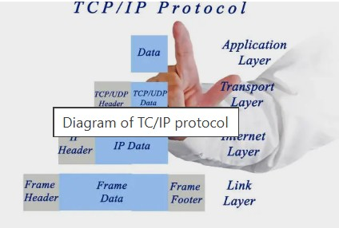

Transmission Control Protocol/Internet Protocol (TCP/IP)

Definition
TCP/IP is a suite of communication protocols used to interconnected devices on the internet. It defines how data should be packetized, addressed, transmitted, and received across the internet.
Key Components of TCP/IP
Transmission Control Protocol (TCP): TCP is responsible for ensuring reliable data transmission between devices. It establishes a connection, manages data flow, and ensures that data packets are delivered in the correct order.
Internet Protocol (IP): IP is responsible for addressing and routing data packets to their destination. It assigns unique IP addresses to devices and determines the best path for data to travel across the network.
User Datagram Protocol (UDP): UDP is a simpler protocol that allows for faster data transmission without the overhead of ensuring reliability. It is often used for applications like streaming and online gaming where speed is more critical than reliability.